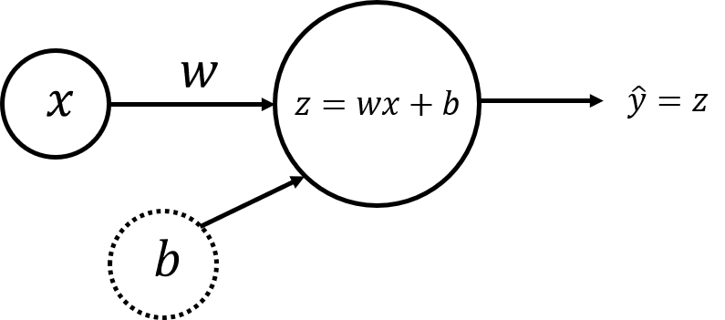
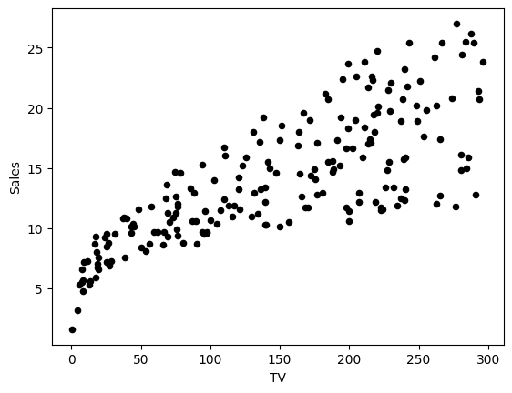
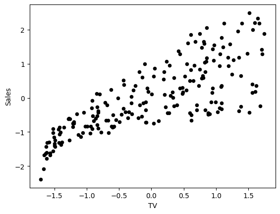
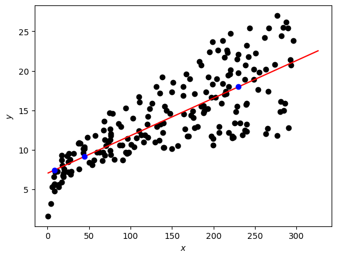

# Import all the required packages
import numpy as np
import matplotlib.pyplot as plt
# A library for data manipulation and analysis
import pandas as pd
# Output of plotting commands is displayed within the Jupyter notebook
%matplotlib inline
# Set a seed so that the results are consistent accross sessions.
np.random.seed(3)Table of contents
- 1 - Simple Linear Regression
- - Simple Linear Regression Model
- - Neural Network Model with a Single Perceptron and One Input Node
- Dataset
- 2 - Multiple Linear Regression
- - Neural Network Model with a Single Perceptron and Two Input Nodes
## 1 - Simple Linear Regression
### - Simple Linear Regression Model
You can describe a simple linear regression model as
\[\hat{y} = wx + b,\tag{1}\]
where \(\hat{y}\) is a prediction of dependent variable \(y\) based on independent variable \(x\) using a line equation with the slope \(w\) and intercept \(b\).
Given a set of training data points \((x_1, y_1)\), …, \((x_m, y_m)\), you will find the “best” fitting line - such parameters \(w\) and \(b\) that the differences between original values \(y_i\) and predicted values \(\hat{y}_i = wx_i + b\) are minimum.
### - Neural Network Model with a Single Perceptron and One Input Node
The simplest neural network model that describes the above problem can be realized by using one perceptron. The input and output layers will have one node each (\(x\) for input and \(\hat{y} = z\) for output):

Weight (\(w\)) and bias (\(b\)) are the parameters that will get updated when you train the model. They are initialized to some random values or set to 0 and updated as the training progresses.
For each training example \(x^{(i)}\), the prediction \(\hat{y}^{(i)}\) can be calculated as:
\[\begin{align} z^{(i)} &= w x^{(i)} + b,\\ \hat{y}^{(i)} &= z^{(i)}, \tag{2}\end{align}\]
where \(i = 1, \dots, m\).
You can organise all training examples as a vector \(X\) of size (\(1 \times m\)) and perform scalar multiplication of \(X\) (\(1 \times m\)) by a scalar \(w\), adding \(b\), which will be broadcasted to a vector of size (\(1 \times m\)):
\[\begin{align} Z &= w X + b,\\ \hat{Y} &= Z, \tag{3}\end{align}\]
This set of calculations is called forward propagation.
For each training example you can measure the difference between original values \(y^{(i)}\) and predicted values \(\hat{y}^{(i)}\) with the loss function \(L\left(w, b\right) = \frac{1}{2}\left(\hat{y}^{(i)} - y^{(i)}\right)^2\). Division by \(2\) is taken just for scaling purposes, you will see the reason below, calculating partial derivatives. To compare the resulting vector of the predictions \(\hat{Y}\) (\(1 \times m\)) with the vector \(Y\) of original values \(y^{(i)}\), you can take an average of the loss function values for each of the training examples:
\[\mathcal{L}\left(w, b\right) = \frac{1}{2m}\sum_{i=1}^{m} \left(\hat{y}^{(i)} - y^{(i)}\right)^2.\tag{4}\]
This function is called the sum of squares cost function. The aim is to optimize the cost function during the training, which will minimize the differences between original values \(y^{(i)}\) and predicted values \(\hat{y}^{(i)}\).
When your weights were just initialized with some random values, and no training was done yet, you can’t expect good results. You need to calculate the adjustments for the weight and bias, minimizing the cost function. This process is called backward propagation.
According to the gradient descent algorithm, you can calculate partial derivatives as:
\[\begin{align} \frac{\partial \mathcal{L} }{ \partial w } &= \frac{1}{m}\sum_{i=1}^{m} \left(\hat{y}^{(i)} - y^{(i)}\right)x^{(i)},\\ \frac{\partial \mathcal{L} }{ \partial b } &= \frac{1}{m}\sum_{i=1}^{m} \left(\hat{y}^{(i)} - y^{(i)}\right). \tag{5}\end{align}\]
You can see how the additional division by \(2\) in the equation \((4)\) helped to simplify the results of the partial derivatives. Then update the parameters iteratively using the expressions
\[\begin{align} w &= w - \alpha \frac{\partial \mathcal{L} }{ \partial w },\\ b &= b - \alpha \frac{\partial \mathcal{L} }{ \partial b }, \tag{6}\end{align}\]
where \(\alpha\) is the learning rate. Then repeat the process until the cost function stops decreasing.
The general methodology to build a neural network is to: 1. Define the neural network structure ( # of input units, # of hidden units, etc). 2. Initialize the model’s parameters 3. Loop: - Implement forward propagation (calculate the perceptron output), - Implement backward propagation (to get the required corrections for the parameters), - Update parameters. 4. Make predictions.
You often build helper functions to compute steps 1-3 and then merge them into one function nn_model(). Once you’ve built nn_model() and learnt the right parameters, you can make predictions on new data.
Dataset
Load the Kaggle dataset, saved in ../data/tvmarketing.csv. It has two fields: TV marketing expenses (TV) and sales amount (Sales).
path = '../../data/regression_with_single_perceptron/tvmarketing.csv'
adv = pd.read_csv(path)Print some part of the dataset
adv.head()| TV | Sales | |
|---|---|---|
| 0 | 230.1 | 22.1 |
| 1 | 44.5 | 10.4 |
| 2 | 17.2 | 9.3 |
| 3 | 151.5 | 18.5 |
| 4 | 180.8 | 12.9 |
Plot the data points to see how they are distributed. You can use plt.plot() function from matplotlib.pyplot module.
adv.plot(x='TV', y='Sales', kind='scatter', c='black')
Normalize the data by subtracting the mean and dividing by the standard deviation. This will help the model to converge faster during training, and to avoid different units of measurement in the input data.
Normalized data have mean 0 and standard deviation 1. The following cell performs column-wise normalization of the dataset:
adv_norm = (adv - np.mean(adv, axis=0)) / np.std(adv, axis=0) # As omitting axis for np.std() is depracated, to avoid error, we must pass axis
adv_norm.head()| TV | Sales | |
|---|---|---|
| 0 | 0.969852 | 1.552053 |
| 1 | -1.197376 | -0.696046 |
| 2 | -1.516155 | -0.907406 |
| 3 | 0.052050 | 0.860330 |
| 4 | 0.394182 | -0.215683 |
X_norm = adv_norm['TV'] # type pd.Series
Y_norm = adv_norm['Sales'] # type pd.Series
# Convert to np.array first to be able to reshape
X_norm = np.array(X_norm).reshape(1, -1)
Y_norm = np.array(Y_norm).reshape(1, -1)
X_norm.shape, Y_norm.shape((1, 200), (1, 200))Plot the data points to see how they are distributed.
adv_norm.plot(x='TV', y='Sales', kind='scatter', c='black')
def layer_sizes(X, Y):
"""
Arguments:
X -- input dataset of shape (input size, number of examples)
Y -- labels of shape (output size, number of examples)
Returns:
n_x -- the size of the input layer
n_y -- the size of the output layer
"""
n_x, n_y = X.shape[0], Y.shape[0]
return (n_x, n_y)
n_x, n_y = layer_sizes(X_norm, Y_norm)
print(n_x, n_y)1 1def initialize_parameters(n_x, n_y):
"""
Returns:
params -- python dictionary containing your parameters:
W -- weight matrix of shape (n_y, n_x)
b -- bias value set as a vector of shape (n_y, 1)
"""
W = np.random.randn(n_y, n_x) * 0.01 # scales down with std of 0.01 to avoid large computations later on
b = np.zeros((n_y, 1))
params = {"W": W,
"b": b}
return params
parameters = initialize_parameters(n_x, n_y)
print(parameters["W"], parameters["b"])[[0.01788628]] [[0.]]Implement forward_propagation() following the equation \((3)\) in the section 1.2: \[\begin{align}
Z &= w X + b\\
\hat{Y} &= Z,
\end{align}\]
def forward_propagation(X, parameters):
"""
Argument:
X -- input data of size (n_x, m)
parameters -- python dictionary containing your parameters (output of initialization function)
Returns:
Y_hat -- The output of size (n_y, m)
"""
W = parameters["W"]
b = parameters["b"]
Y_hat = W @ X + b
return Y_hat
Y_hat = forward_propagation(X_norm, parameters)
print("Some element of predicted Y_hat values: ", Y_hat[0, :5])Some element of predicted Y_hat values: [ 0.01734705 -0.02141661 -0.02711838 0.00093098 0.00705046]Your weights were just initialized with some random values, so the model has not been trained yet.
Define a cost function \((4)\) which will be used to train the model:
\[\mathcal{L}\left(w, b\right) = \frac{1}{2m}\sum_{i=1}^{m} \left(\hat{y}^{(i)} - y^{(i)}\right)^2\]
def compute_cost(Y_hat, Y):
"""
Computes the cost function as a sum of squares
Arguments:
Y_hat -- The output of the neural network of shape (n_y, number of examples)
Y -- "true" labels vector of shape (n_y, number of examples)
Returns:
cost -- sum of squares scaled by 1/(2*number of examples)
"""
# Number of examples
m = Y_hat.shape[1]
# Compute cost
cost = np.sum((Y_hat - Y)**2) / (2*m)
return cost
print(f"cost = {str(compute_cost(Y_hat, Y_norm))}")cost = 0.48616887080159704Calculate partial derivatives as shown in \((5)\):
\[\begin{align} \frac{\partial \mathcal{L} }{ \partial w } &= \frac{1}{m}\sum_{i=1}^{m} \left(\hat{y}^{(i)} - y^{(i)}\right)x^{(i)},\\ \frac{\partial \mathcal{L} }{ \partial b } &= \frac{1}{m}\sum_{i=1}^{m} \left(\hat{y}^{(i)} - y^{(i)}\right). \end{align}\]
def backward_propagation(Y_hat, X, Y):
"""
Implements the backward propagation, calculating gradients
Arguments:
Y_hat -- the output of the neural network of shape (n_y, number of examples)
X -- input data of shape (n_x, number of examples)
Y -- "true" labels vector of shape (n_y, number of examples)
Returns:
grads -- python dictionary containing gradients with respect to different parameters
"""
m = X.shape[1]
dZ = Y_hat - Y
dW = 1/m * (dZ @ X.T)
db = 1/m * np.sum(dZ, axis=1, keepdims=True) # Sum over rows, and do not reduce dimensions. e.g. (n_y,) -> (n_y, 1)
grads = {"dW": dW,
"db": db}
return grads
grads = backward_propagation(Y_hat, X_norm, Y_norm)
print("dW = " + str(grads["dW"]))
print("db = " + str(grads["db"]))dW = [[-0.76433814]]
db = [[1.687539e-16]]Update parameters as shown in \((6)\):
\[\begin{align} w &= w - \alpha \frac{\partial \mathcal{L} }{ \partial w },\\ b &= b - \alpha \frac{\partial \mathcal{L} }{ \partial b }. \end{align}\]
def update_parameters(parameters, grads, learning_rate=1.2):
"""
Updates parameters using the gradient descent update rule
Arguments:
parameters -- python dictionary containing parameters
grads -- python dictionary containing gradients
learning_rate -- learning rate parameter for gradient descent
Returns:
parameters -- python dictionary containing updated parameters
"""
W = parameters["W"] - learning_rate * grads["dW"]
b = parameters["b"] - learning_rate * grads["db"]
parameters = {"W": W,
"b": b}
return parameters
updated_params = update_parameters(parameters, grads)
print("W updated = " + str(updated_params["W"]))
print("b updated = " + str(updated_params["b"]))W updated = [[0.93509205]]
b updated = [[-2.0250468e-16]]Put everything together in the function nn_model().
def nn_model(X, Y, num_iterations=10, learning_rate=1.2, print_cost=False):
"""
Arguments:
X -- dataset of shape (n_x, number of examples)
Y -- labels of shape (n_y, number of examples)
num_iterations -- number of iterations in the loop
learning_rate -- learning rate parameter for gradient descent
print_cost -- if True, print the cost every iteration
Returns:
parameters -- parameters learnt by the model. They can then be used to make predictions.
"""
n_x, n_y = layer_sizes(X, Y)
parameters = initialize_parameters(n_x, n_y)
for i in range(num_iterations):
# Forward propagation. Inputs: "X, parameters". Output: "Y_hat".
Y_hat = forward_propagation(X, parameters)
# Cost function. Inputs: "Y_hat, Y". Output: "cost".
cost = compute_cost(Y_hat, Y)
# Backpropagation. Inputs: "Y_hat, X, Y". Output: "grads".
grads = backward_propagation(Y_hat, X, Y)
# Gradient descent parameter update. Inputs: "parameters, grads, learning_rate". Output: "parameters".
parameters = update_parameters(parameters, grads, learning_rate)
if print_cost:
print(f"Cost after iteration {i}: {cost}")
return parameters parameters_simple = nn_model(X_norm, Y_norm, num_iterations=30, learning_rate=1.2, print_cost=True)
print("W = " + str(parameters_simple["W"]))
print("b = " + str(parameters_simple["b"]))
W_simple = parameters["W"]
b_simple = parameters["b"]Cost after iteration 0: 0.49659504037484803
Cost after iteration 1: 0.20616377720695983
Cost after iteration 2: 0.1945465266802443
Cost after iteration 3: 0.1940818366591757
Cost after iteration 4: 0.19406324905833294
Cost after iteration 5: 0.19406250555429921
Cost after iteration 6: 0.19406247581413788
Cost after iteration 7: 0.19406247462453144
Cost after iteration 8: 0.19406247457694714
Cost after iteration 9: 0.1940624745750438
Cost after iteration 10: 0.19406247457496764
Cost after iteration 11: 0.19406247457496462
Cost after iteration 12: 0.19406247457496448
Cost after iteration 13: 0.19406247457496448
Cost after iteration 14: 0.19406247457496448
Cost after iteration 15: 0.19406247457496448
Cost after iteration 16: 0.19406247457496448
Cost after iteration 17: 0.19406247457496448
Cost after iteration 18: 0.19406247457496448
Cost after iteration 19: 0.19406247457496448
Cost after iteration 20: 0.19406247457496448
Cost after iteration 21: 0.19406247457496448
Cost after iteration 22: 0.19406247457496448
Cost after iteration 23: 0.19406247457496448
Cost after iteration 24: 0.19406247457496448
Cost after iteration 25: 0.19406247457496448
Cost after iteration 26: 0.19406247457496448
Cost after iteration 27: 0.19406247457496448
Cost after iteration 28: 0.19406247457496448
Cost after iteration 29: 0.19406247457496448
W = [[0.78222442]]
b = [[-3.19744231e-16]]def predict(X, Y, parameters, X_pred):
W = parameters["W"]
b = parameters["b"]
# Use the same mean and standard deviation of the original training array X.
"""
Handling of X for normalization:
- If X is a Pandas Series:
np.mean(X) and np.std(X) return scalar values (shape ()),
because a Series is essentially a 1D array of values.
This case typically corresponds to having only one feature column.
In this scenario, we store mean and std as scalars and normalize X_pred
using these scalars, then reshape it to (1, len(X_pred)) so that it
matches the expected shape for matrix multiplication with W.
- If X is a Pandas DataFrame:
np.mean(X) and np.std(X) return a Pandas Series containing
column-wise means and standard deviations. Converting them to NumPy
arrays produces a 1D vector of shape (n_features,).
We reshape them to (n_features, 1) so they can be broadcasted
correctly during normalization of X_pred.
This case typically corresponds to having multiple feature columns.
"""
if isinstance(X, pd.Series):
X_mean = np.mean(X)
X_std = np.std(X)
X_pred_norm = ((X_pred - X_mean) / X_std).reshape((1, len(X_pred)))
else:
X_mean = np.array(np.mean(X, axis=0)).reshape((len(X.axes[1]), 1))
X_std = np.array(np.std(X, axis=0)).reshape((len(X.axes[1]), 1))
X_pred_norm = (X_pred - X_mean) / X_std
# Make predictions
Y_pred_norm = W @ X_pred_norm + b
# Convert back using same mean and std of original training Y
Y_pred = Y_pred_norm * np.std(Y) + np.mean(Y)
return Y_pred[0]
X_pred = np.array([230.1, 44.2, 8.6])
Y_pred = predict(adv["TV"], adv["Sales"], parameters_simple, X_pred)
print(f"TV marketing expenses:\n{X_pred}")
print(f"Predictions of sales:\n{Y_pred}")TV marketing expenses:
[230.1 44.2 8.6]
Predictions of sales:
[17.97077451 9.13371306 7.44140866]fig, ax = plt.subplots()
ax.scatter(adv["TV"], adv["Sales"], c="black")
ax.set_xlabel("$x$")
ax.set_ylabel("$y$")
X_line = np.arange(np.min(adv["TV"]), np.max(adv["TV"])*1.1, 0.1)
Y_line = predict(adv["TV"], adv["Sales"], parameters_simple, X_line)
ax.plot(X_line, Y_line, "r")
ax.plot(X_pred, Y_pred, "bo") # blue dots
plt.plot()
plt.show()
## 2 - Multiple Linear Regression ### - Neural Network Model with a Single Perceptron and Two Input Nodes
Let’s build a linear regression model for a Kaggle dataset House Prices, saved in a file ..data/house_prices_train.csv. You will use two fields - ground living area (GrLivArea, square feet) and rates of the overall quality of material and finish (OverallQual, 1-10) to predict sales price (SalePrice, dollars).
path = '../../data/regression_with_single_perceptron/house_prices_train.csv'
df = pd.read_csv(path)
X_multi = df[['GrLivArea', 'OverallQual']]
Y_multi = df['SalePrice']
X_multi.shape, Y_multi.shape((1460, 2), (1460,))display(X_multi)
display(Y_multi)| GrLivArea | OverallQual | |
|---|---|---|
| 0 | 1710 | 7 |
| 1 | 1262 | 6 |
| 2 | 1786 | 7 |
| 3 | 1717 | 7 |
| 4 | 2198 | 8 |
| ... | ... | ... |
| 1455 | 1647 | 6 |
| 1456 | 2073 | 6 |
| 1457 | 2340 | 7 |
| 1458 | 1078 | 5 |
| 1459 | 1256 | 5 |
1460 rows × 2 columns
0 208500
1 181500
2 223500
3 140000
4 250000
...
1455 175000
1456 210000
1457 266500
1458 142125
1459 147500
Name: SalePrice, Length: 1460, dtype: int64
X_multi_norm = (X_multi - np.mean(X_multi, axis=0)) / np.std(X_multi, axis=0)
Y_multi_norm = (Y_multi - np.mean(Y_multi)) / np.std(Y_multi, axis=0)
X_multi_norm.shape, Y_norm.shape((1460, 2), (1, 200))X_multi_norm = np.array(X_multi_norm).T
Y_multi_norm = np.array(Y_multi_norm).reshape((1, len(Y_multi_norm)))
X_norm.shape, Y_multi_norm.shape((1, 200), (1, 1460))print(X_multi_norm[:, :5], Y_multi_norm[0, :5])[[ 0.37033344 -0.48251191 0.51501256 0.38365915 1.2993257 ]
[ 0.65147924 -0.07183611 0.65147924 0.65147924 1.3747946 ]] [ 0.34727322 0.00728832 0.53615372 -0.51528106 0.8698426 ]parameters_multi = nn_model(X_multi_norm, Y_multi_norm, num_iterations=100, print_cost=True)
W = parameters_multi["W"]
b = parameters_multi["b"]
print(f"W: {parameters_multi['W']} and b: {parameters_multi['b']}")Cost after iteration 0: 0.5142195119760039
Cost after iteration 1: 0.44862664805802294
Cost after iteration 2: 0.3962236237408893
Cost after iteration 3: 0.35322650244442194
Cost after iteration 4: 0.3176388968906906
Cost after iteration 5: 0.28810227675703015
Cost after iteration 6: 0.2635663230551014
Cost after iteration 7: 0.2431787775092655
Cost after iteration 8: 0.22623677631465744
Cost after iteration 9: 0.21215762854913936
Cost after iteration 10: 0.20045746930524147
Cost after iteration 11: 0.19073428857122826
Cost after iteration 12: 0.1826540289332285
Cost after iteration 13: 0.1759390850066516
Cost after iteration 14: 0.170358759895168
Cost after iteration 15: 0.1657213378223942
Cost after iteration 16: 0.16186749718900195
Cost after iteration 17: 0.15866483686740238
Cost after iteration 18: 0.1560033274486568
Cost after iteration 19: 0.1537915311054225
Cost after iteration 20: 0.1519534601860057
Cost after iteration 21: 0.15042596661037508
Cost after iteration 22: 0.14915657237810437
Cost after iteration 23: 0.14810166665369826
Cost after iteration 24: 0.1472250074889603
Cost after iteration 25: 0.14649647670811547
Cost after iteration 26: 0.14589104517897944
Cost after iteration 27: 0.14538791292141448
Cost after iteration 28: 0.14496979451095832
Cost after iteration 29: 0.1446223252272187
Cost after iteration 30: 0.14433356754488944
Cost after iteration 31: 0.1440936010125767
Cost after iteration 32: 0.14389418142946578
Cost after iteration 33: 0.1437284576106279
Cost after iteration 34: 0.1435907360102627
Cost after iteration 35: 0.14347628511635882
Cost after iteration 36: 0.1433811728966296
Cost after iteration 37: 0.14330213171107611
Cost after iteration 38: 0.1432364460501643
Cost after iteration 39: 0.14318185924179086
Cost after iteration 40: 0.1431364959218967
Cost after iteration 41: 0.14309879760515798
Cost after iteration 42: 0.14306746914224452
Cost after iteration 43: 0.14304143422415205
Cost after iteration 44: 0.1430197984049305
Cost after iteration 45: 0.1430018183724325
Cost after iteration 46: 0.1429868764113577
Cost after iteration 47: 0.14297445918125612
Cost after iteration 48: 0.14296414008039493
Cost after iteration 49: 0.142955564589588
Cost after iteration 50: 0.1429484380924669
Cost after iteration 51: 0.14294251575375058
Cost after iteration 52: 0.14293759410777576
Cost after iteration 53: 0.14293350406830627
Cost after iteration 54: 0.1429301051194693
Cost after iteration 55: 0.1429272804882445
Cost after iteration 56: 0.1429249331326534
Cost after iteration 57: 0.14292298240782159
Cost after iteration 58: 0.14292136129537322
Cost after iteration 59: 0.14292001410097277
Cost after iteration 60: 0.14291889454091114
Cost after iteration 61: 0.14291796415199975
Cost after iteration 62: 0.14291719097014374
Cost after iteration 63: 0.14291654843219517
Cost after iteration 64: 0.14291601446335958
Cost after iteration 65: 0.14291557071880256
Cost after iteration 66: 0.14291520195340132
Cost after iteration 67: 0.1429148954979891
Cost after iteration 68: 0.1429146408240979
Cost after iteration 69: 0.1429144291822463
Cost after iteration 70: 0.1429142533013457
Cost after iteration 71: 0.14291410713889743
Cost after iteration 72: 0.14291398567339883
Cost after iteration 73: 0.14291388473182634
Cost after iteration 74: 0.14291380084626906
Cost after iteration 75: 0.14291373113478598
Cost after iteration 76: 0.1429136732023953
Cost after iteration 77: 0.14291362505879346
Cost after iteration 78: 0.14291358504997667
Cost after iteration 79: 0.14291355180141707
Cost after iteration 80: 0.1429135241708394
Cost after iteration 81: 0.14291350120897797
Cost after iteration 82: 0.1429134821269635
Cost after iteration 83: 0.1429134662692215
Cost after iteration 84: 0.14291345309094916
Cost after iteration 85: 0.14291344213939877
Cost after iteration 86: 0.14291343303832293
Cost after iteration 87: 0.14291342547504843
Cost after iteration 88: 0.14291341918973427
Cost after iteration 89: 0.1429134139664445
Cost after iteration 90: 0.14291340962572974
Cost after iteration 91: 0.142913406018462
Cost after iteration 92: 0.14291340302071137
Cost after iteration 93: 0.14291340052948823
Cost after iteration 94: 0.142913398459205
Cost after iteration 95: 0.14291339673873585
Cost after iteration 96: 0.14291339530897298
Cost after iteration 97: 0.14291339412079596
Cost after iteration 98: 0.14291339313338425
Cost after iteration 99: 0.1429133923128147
W: [[0.3694604 0.57181575]] and b: [[1.21181604e-16]]X_multi_pred = np.array([[1710, 7], [1200, 6], [2200, 8]]).T
Y_multi_pred = predict(X_multi, Y_multi, parameters_multi, X_multi_pred)
print(f"Ground living area, square feet:\n{X_multi_pred[0]}")
print(f"Rates of the overall quality of material and finish, 1-10:\n{X_multi_pred[1]}")
print(f"Predictions of sales price, $:\n{np.round(Y_multi_pred)}")Ground living area, square feet:
[1710 1200 2200]
Rates of the overall quality of material and finish, 1-10:
[7 6 8]
Predictions of sales price, $:
[221371. 160039. 281587.]# Ensure X_multi and Y_multi exist; if not, load
try:
X_multi
Y_multi
except NameError:
df = pd.read_csv('../data/house_prices_train.csv')
X_multi = df[['GrLivArea', 'OverallQual']]
Y_multi = df['SalePrice']
# Ensure trained parameters are available (no retraining here)
if 'parameters_multi' not in globals():
raise RuntimeError("Trained parameters 'parameters_multi' not found. Please run the training cell above first.")
# Build prediction grids while fixing the other feature at its mean (original scale)
x1 = np.linspace(X_multi['GrLivArea'].min(), X_multi['GrLivArea'].max() * 1.1, 200)
x2_fixed = float(X_multi['OverallQual'].mean())
X_pred1 = np.vstack([x1, np.full_like(x1, x2_fixed)]) # shape (2, 200)
y1 = predict(X_multi, Y_multi, parameters_multi, X_pred1)
x2 = np.linspace(X_multi['OverallQual'].min(), X_multi['OverallQual'].max() * 1.1, 200)
x1_fixed = float(X_multi['GrLivArea'].mean())
X_pred2 = np.vstack([np.full_like(x2, x1_fixed), x2]) # shape (2, 200)
y2 = predict(X_multi, Y_multi, parameters_multi, X_pred2)
# Plot
fig, axes = plt.subplots(1, 2, figsize=(12, 5), sharey=True)
# Subplot 1: SalePrice vs GrLivArea
axes[0].scatter(X_multi['GrLivArea'], Y_multi, s=12, alpha=0.6, color='black', label='Data')
axes[0].plot(x1, y1, color='red', linewidth=2, label='Predicted')
axes[0].set_xlabel('GrLivArea (sq ft)')
axes[0].set_ylabel('SalePrice ($)')
axes[0].set_title('SalePrice vs GrLivArea')
axes[0].legend(loc='best')
# Subplot 2: SalePrice vs OverallQual
axes[1].scatter(X_multi['OverallQual'], Y_multi, s=12, alpha=0.6, color='black', label='Data')
axes[1].plot(x2, y2, color='red', linewidth=2, label='Predicted')
axes[1].set_xlabel('OverallQual (1-10)')
axes[1].set_title('SalePrice vs OverallQual')
axes[1].legend(loc='best')
fig.suptitle('House Prices: Feature-wise Scatter with Predicted Lines', y=1.02)
plt.tight_layout()
plt.show()